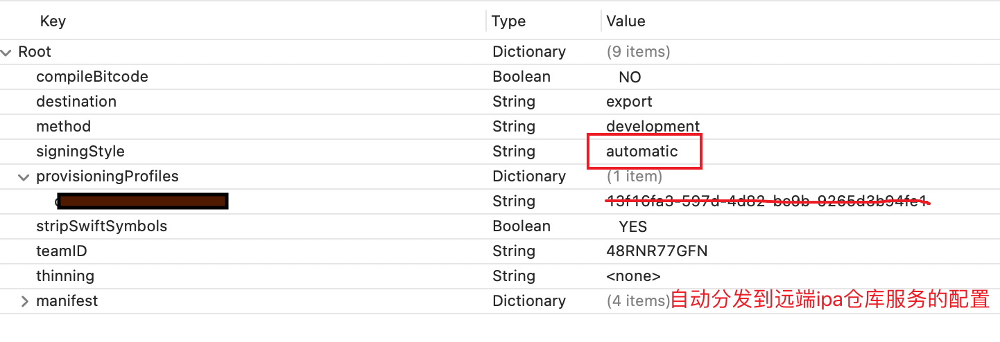

Xcode项目打包的签名管理策略
Xcode项目打包的签名管理
一、有证书权限开发者账号，直接aumatically manage signing
Xcode能够自动管理和生成所需的描述文件（Provisioning Profiles），这些描述文件包含了多个关键的信息：
- **开发者证书 (Developer Certificate)**：用于代码签名，确保应用是由已认证的开发者发布的。开发者证书需要与开发者的Mac设备绑定，这样Xcode才能使用对应的私钥来进行代码签名，有几个开发者一般就包含几个证书信息。
- Bundle ID：应用的唯一标识符，通常反映了应用的域名结构（如com.example.myapp）。
- App Capabilities：应用的功能权限，比如推送通知、iCloud、In-App Purchase等。
- **设备列表 (Devices)**：特别是对于开发和Ad Hoc描述文件，它们会包含能够安装和运行应用的设备UDID（Unique Device Identifier）列表。
当你在Xcode中启用“自动管理签名”功能时，Xcode会与Apple Developer Center通信，自动创建和下载正确的描述文件和所需的证书（自动产生对应mac下的开发者证书），以便能够在本地和连接的设备上构建和运行应用。这大大简化了代码签名和证书管理的过程，尤其是对于新的或不熟悉手动证书管理流程的开发者而言。在早期版本的Xcode中，开启自动签名功能确实会在开发者账户后台创建大量以”XC”开头的配置文件，这些文件是为了简化开发过程而自动生成的。在较新的Xcode版本中，苹果改进了这个过程，使其变得更加精简和高效。现在，Xcode的自动签名功能会更加智能地管理证书和配置文件，尽量减少不必要的创建，避免开发者账户中出现大量自动生成的描述文件。Xcode会复用现有的证书和配置文件，而不是每次都创建新的。
优点是全自动，缺点是需要邀请所有开发者而且给到相应权限，会创建很多证书（每台开发机一个），另外被邀请也是有上限的。一般小的开发团队也是够用的，应该可以说是大多数情况下最合适的选项。
lane代码如下：
1 | |
关于签名的配置写在了plist文件中，其中的signStyle改成automatic：
二、手动管理，开发者只拥有导出的p12开发者证书和dev、adhoc和release的描述文件
每个开发者使用同一套证书和配置文件，这个通常包含在工程文件夹。每次添加设备需要重新生成描述文件，各个开发者同步安装。
优点是证书统一不混乱，能保证每次签名流程一致，不需要拉很多人到开发团队账号下。
缺点是如果添加设备profile文件必须更新，而且需要更新ci流程中的导出选项中plist的profiles ID，plist中的signingStyle改成mannul，然后设置好profiles ID，另外证书有泄漏的风险。
三、通过fastlane match管理
使用fastlane match保留了手动管理的优点，不需要手动处理证书文件或者在团队成员之间手动分发.p12文件。match还自动化了证书生成描述文件更新这些操作，你只需要写好配置文件，执行相应的命令即可。另外结合新版本Xcode的aumatically manage signing不会冲突，会自动的选择match配置。
- 初始化 match：在你的项目目录下，使用
fastlane match init命令来初始化 match。这将会创建一个Matchfile，你需要在其中指定你的 git 存储库 URL 和应用的 bundle ID：
1 | |
创建证书和 Provisioning Profiles：使用
fastlane match development、fastlane match adhoc、fastlane match appstore或者fastlane match enterprise来创建对应类型的证书和 Provisioning Profiles。创建的过程最好使用ssh通信，CI更通畅，第一次的时候会要求你输入Passphrase for Match storage。这个密码短语将用于生成一个加密的存储库，存储所有签名证书和配置文件。任何需要读取或修改存储库内容的操作都需要这个密码短语来解密内容。这意味着，你和你的团队成员需要共享这个密码短语，以便他们可以使用
match来管理签名凭证，产生的p12的密码也是对应这个密码短语。
1 | |
- match创建过程中，会需要你输入Please enter the 6 digit code苹果二次确认码。
- 会要求存储keychain的本机密码，因为自动创建的证书等需要安装。
- 到这应该就创建并且安装完成了，去证书仓库以及苹果后台验证，是否有对应的本机证书以及match Development com.xx.xx的描述文件，仓库默认branch是master。
- 双击p12证书是无法导入的，输入之前的Passphrase貌似不好用，不管了。反正别的机器通过match，输入之前的Passphrase也能正常安装。
- 找个别的机器执行fastlane match development，会让你输入Passphrase以及本机锁屏密码，以及matchfile里面苹果账号的二次确认。如果走通，就可以开始编写CI文件了。脚本中需要提前设置好环境变量，MATCH_PASSWORD=”your_match_passphrase” ，另外export设置里面描述文件不用profile id用描述文件名就行。
note：可以通过在itc后台生成p8秘钥，避免CI流程被match和itc通信二次确认中断。其实也可以不用这一步，新mac直接match一下就可以开发了，CI机器match过就行，打包流程中不需要match
四、Match的其他操作
fastlane match 是 fastlane 工具集中管理证书和配置文件的工具，它旨在简化 iOS 和 macOS 应用程序的代码签名过程。match 提供了几个操作来帮助自动化和同步证书和配置文件（Provisioning Profiles），适用于不同的场景。
以下是 fastlane match 的几种常见操作及其适用场景：
创建和同步证书和配置文件：
match会为你的应用创建新的证书和配置文件，然后将它们存储在一个指定的 Git 仓库中。- 适用场景：新项目的初始化，或添加新成员到项目团队时，确保他们拥有所需的签名凭据。
只读模式：
- 通过
match readonly，match会尝试从远程仓库中克隆和安装证书和配置文件，但不会修改它们或创建新的证书。 - 适用场景：持续集成（CI）系统中的构建任务，或当你不想更改任何证书和配置文件，只是想确保本地有最新的证书。
- 通过
强制创建：
- 通过
match force，你可以强制match创建新的证书和配置文件，即使它检测到已存在有效的证书。 - 适用场景：当你知道现有的证书已经不可用，或者想要重新生成证书和配置文件时。
- 通过
更新配置文件：
- 使用
match时，可以通过添加--force_for_new_devices参数来更新配置文件，以包括新注册的设备。 - 适用场景：在你添加了新的测试设备到 Apple Developer Center 后，需要更新你的开发配置文件。
- 使用
撤销证书和配置文件：
fastlane match nuke会撤销所有类型的证书和配置文件，或者指定类型的证书和配置文件（development 或 distribution）。- 适用场景：当你的证书被泄露，或者你想要完全重置你的证书和配置文件时。
删除特定证书或配置文件：
match没有直接的命令来删除单个证书或配置文件，但可以手动移除 Git 仓库中的对应文件，然后运行match来重新生成所需的证书。- 适用场景：当你需要删除特定的证书或配置文件时。